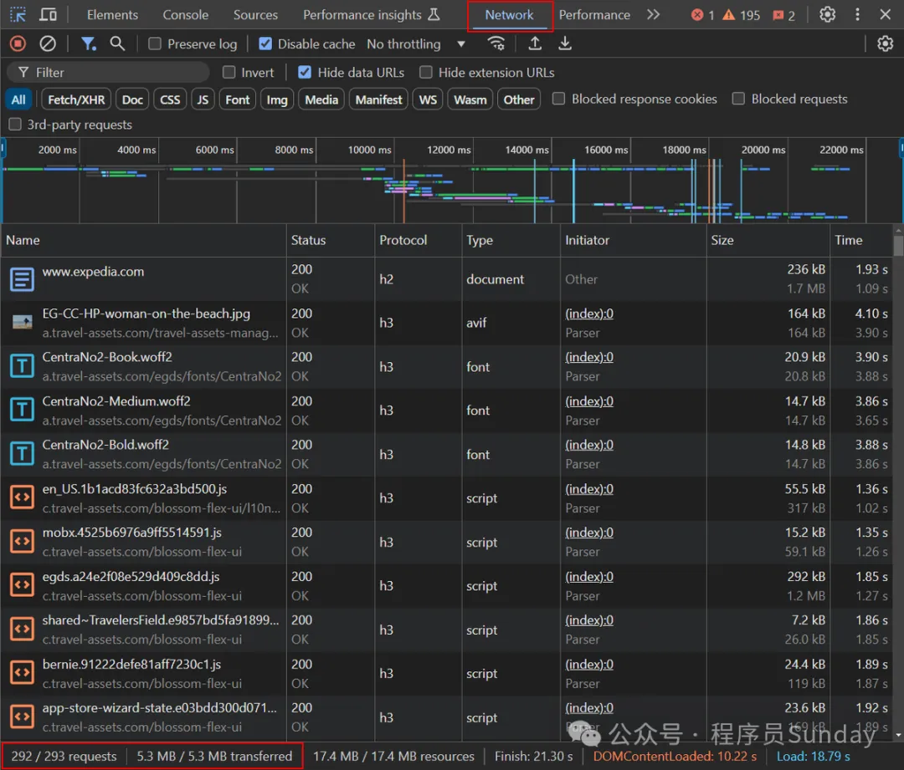
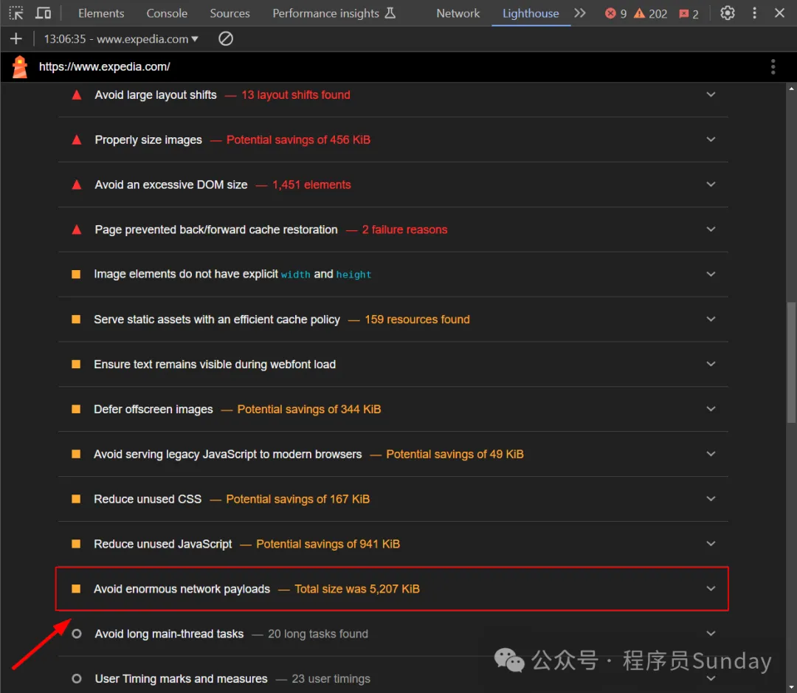
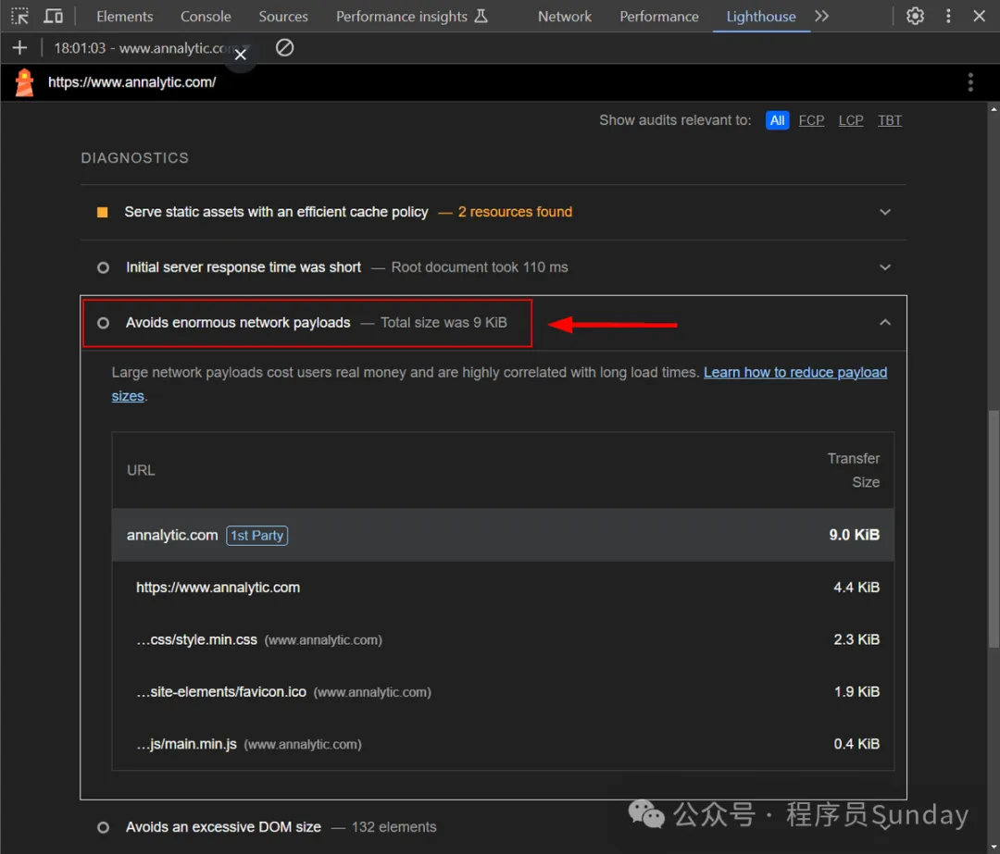
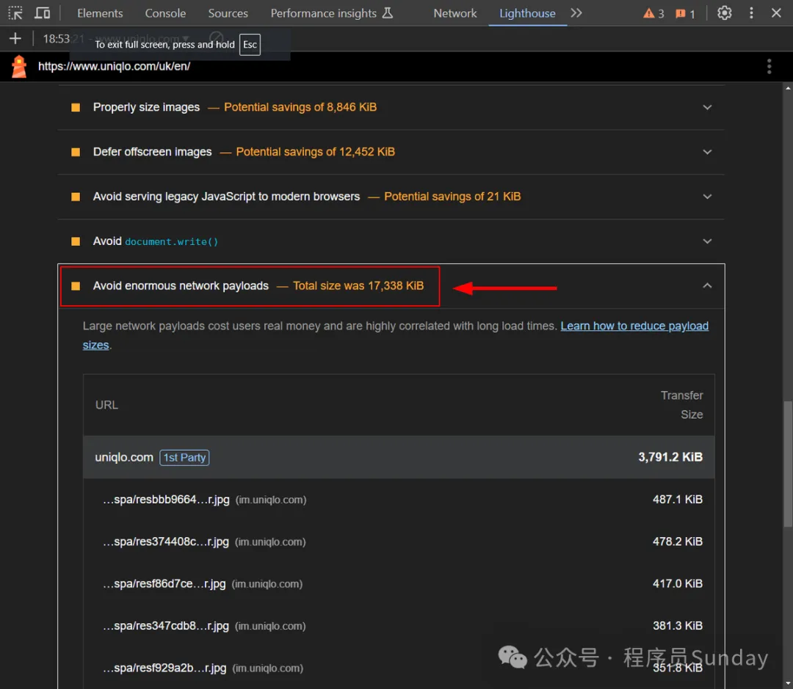
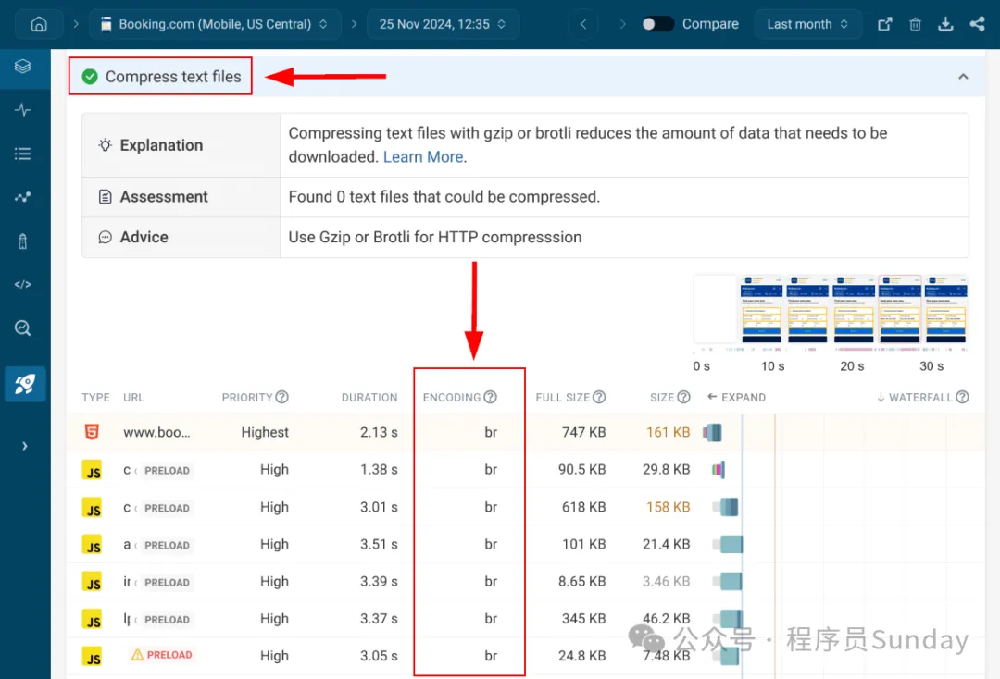

HaoTian · 2024-12-28 19:45:30
性能优化在前端面试中是非常常见并且难以回答的问题。一般我们回答性能优化主要会围绕着三个方面来回答：
其中每一块如果展开说，内容都非常的多。无法通过一篇文章进行描述。
所以，今天咱们主要就针对 网络优化 进行讲解，主要的内容是 如何避免网络负载。
避免巨大的网络负载是 Lighthouse 的一个审计指标，它指的是 前端文件通过网络传输的总大小。要通过这个审计，网络负载需要保持在一定的阈值以下。
在现代网站和 Web 应用中，网络负载往往会迅速增长。造成巨大的网络负载可能有多种原因，因此需要实施一个全面的 Web 性能优化流程。这包括：识别特定问题、可视化 HTML 和 CSS 文件、压缩和精简代码、减小字体和图片的体积等等。
在本文中，我们将详细探讨这个优化流程。不过在开始之前，让我们先来了解什么是网络负载，以及当网络负载变得“巨大”时会带来哪些问题。
网络负载 是指页面从自身服务器或第三方服务器通过互联网下载的所有文件（即资源）的总和。
这些资源包括：
你可以通过 Chrome DevTools 的 Network（网络）面板 查看页面的资源列表。每个资源都会对应一个网络请求。
例如，下图展示了 Expedia 首页的网络请求列表（网络负载包含 293 个文件，总大小为 5.3 MB）：
这个网络负载触发了 Lighthouse 的黄色警告标志，意味着资源优化还有很大的改进空间：
为了避免“巨大的网络负载”问题，需要减少资源的总大小。可以通过以下三种方式实现：
loading="lazy" 属性为图片和 iframe 添加懒加载。需要特别注意的是，Lighthouse 记录的是页面初始加载时的网络负载。这意味着报告显示的资源大小是页面首次加载时所有请求的总和。然而，随着用户与页面交互，浏览器可能会根据用户的操作请求新的资源，从而进一步增加网络负载。
因此，在优化时，除了关注初始加载的资源，也需要确保动态加载的资源同样得到合理的优化。
根据 Lighthouse 的文档，当网络负载满足以下条件时，就会被认为是“巨大”：
根据 HTTP Archive 的数据，网络负载的中位数在 1,700 到 1,900 KiB 之间。为了突出最重的网络负载，Lighthouse 会标记那些总网络请求超过 5,000 KiB 的页面。
不过，需要注意的是，这些数据最后一次更新是在 2019 年（约 5 年前）。在实际测试中，Lighthouse 的报告显示的结果可能会有所不同。而且，官方文档中并没有提供更近期的具体阈值。
基于测试、相关文章的研究以及 Lighthouse 源代码的分析，以下是一些有趣的发现：
示例：
下图中，尽管作者的网站网络负载非常轻，仅为 9 KB，Lighthouse 仍然显示灰色标志，而非绿色：
示例：
下图中，Uniqlo 首页的网络负载高达 17,338 KB，但仍然只触发了黄色标志：
根据以上实测，可以推断出：
简单来说：
因此，优化目标是让网络负载尽可能小，以达到灰色标志的标准。
巨大的网络负载会对 Web 性能产生严重影响，不仅会导致页面加载变慢，有时还会引发意外的布局偏移问题。
这种影响主要体现在以下几个方面：
巨大的网络负载可能会增加以下三个 核心 Web 指标 的得分，从而降低用户体验：
总结：
网络负载是一个会影响几乎所有其他性能指标的关键度量，因此优化网络负载是提升整体性能的基础。
Lighthouse 的 "Avoid Enormous Network Payloads" 审计从未给出绿色标志，甚至当页面的网络负载仅为 9 KB 时，仍然只是显示灰色标志。这可能是因为：
尽管优化网络负载对性能非常重要，但根据 HTTP Archive 的报告，网络负载的中位数在过去几年中持续增长：
这表明，随着现代 Web 应用和网站变得越来越复杂，网络负载的优化工作也变得更加重要。
在了解了网络负载对性能的影响后，接下来我们将探讨 10 个实用步骤，帮助开发者有效地减少网络负载，从而改善页面性能。
优化网络负载的第一步是分析它的结构和大小，从而找到可以优化的地方。你可以通过以下两种方式开始分析：
如果需要更细粒度的洞察，可以使用更高级的 Web 性能分析工具，比如 DebugBear。这些工具可以提供更详细的网络负载信息，例如：
解读瀑布图：
瀑布图可以帮助你了解网络负载的结构，包括：
通过分析这些信息，你可以：
DebugBear 提供了丰富的分析功能，以下是一些实用的特性：
资源排序：根据请求的优先级、持续时间、大小和下载顺序对资源进行排序。
域名分析：查看浏览器连接的所有第三方域名。
资源过滤：按文件类型（HTML、CSS、脚本、图片、字体等）过滤资源，快速定位目标资源。
HTTP 请求细节检查：
请求头和响应头
请求体内容
请求链（Request Chain）
其他相关信息
这些功能可以帮助你逐一分析每个页面的资源，并为后续的优化提供具体依据。
通过分析网络负载，以下几种优化方法值得尝试：
HTML 文件通常是页面中最大的资源之一。例如，在 Expedia 首页，HTML 文件的大小达到 210 KB，需要重点优化。
<style> 块。<script> 内容。<link rel="stylesheet" href="style.css" />
<script src="script.js"></script>
在优化 HTML 文件后，下一个优化目标是分析并减少 CSS 文件的大小。由于一个页面可能加载多个 CSS 文件（包括自有域和第三方域），这些文件可能包含许多冗余内容。
/* 冗长选择器 */
body.home.page .content > .section .title > span {
color: red;
}
/* 简化选择器 */
.title span {
color: red;
}
import("./style.css").then(() => console.log("CSS 已加载"));
/* 冗长变量名 */
--bui_animation_page_transition_enter: var(
--bui_animation_page_transition_enter_duration
) var(--bui_animation_page_transition_enter_timing_function);
/* 简短变量名 */
--anim_enter: var(--anim_dur) var(--anim_time);
优化网络负载的一个关键步骤是压缩 HTML、CSS、JavaScript、JSON 等文本文件。通过服务器端压缩，可以显著减少文件体积，加快网页加载速度。
低压缩级别（如 GZIP 1, Brotli 1, Zstandard -7）
压缩速度更快，但效率较低。
高压缩级别（如 GZIP 9, Brotli 11, Zstandard 22）
压缩效率更高，但需要更多的 CPU 时间。
选择压缩级别需要根据服务器性能和网络传输需求平衡。大多数场景推荐使用中高压缩级别（如 Brotli 6-8）。
使用工具如 DebugBear 可以检测页面加载的所有资源及其对应的压缩算法：
示例：
下图显示 Booking.com 首页的文本文件大多使用 Brotli 压缩：
在压缩文本文件的基础上，进一步对 HTML、CSS 和 JavaScript 文件进行精简（Minify），可以显著减少文件体积。当压缩和精简结合使用时，文件体积的总体减少可以达到 90%
精简和压缩是两种不同的优化技术，以下是它们的主要区别：
| 特点 | 压缩（Compression） | 精简（Minification） |
|---|---|---|
| 作用 | 使用 GZIP、Brotli、Zstandard 等算法对文本文件进行编码。 | 移除代码中的多余空格、换行符、分号和注释等冗余内容。 |
| 执行位置 | 在服务器端编码，浏览器端解码；通过 HTTP Header 协商支持的算法。 | 在构建流程中或上传到服务器前完成，浏览器可直接解析精简文件。 |
| 输出文件格式 | 不可读，文件后缀通常为 .gz, .br, .zst 等（保留原始扩展名）。 |
可读，文件后缀不变，但通常添加 .min 标识，如 .min.css。 |
| 工具 | 服务器端编码器如 GZIP、Brotli、Zstandard。 | 构建工具如 Webpack、Rollup，或独立精简工具如 HTML Minifier。 |
示例对比：
以下为 Bootstrap 精简后的 CSS 文件和 Brotli 压缩后的版本对比：
.btn.active,.btn.show,.btn:first-child:active,:not(.btn-check)+.btn:active{color:var(--bs-btn-active-color);background-color:var(--bs-btn-active-bg);border-color:var(--bs-btn-active-border-color)}
G8MAAETd1uqH7vTZki+2CyoWEWJ28wKlWnRL8kDaC/z2D/ZID3XDpKTMf8ObWB4nHaaOiV5IhxumqFHOYwD0WCgZwXPz0e3LyNhspfCF9vmf+Y6BA38N7lDhAw==
在上述例子中，Brotli 压缩使文件从 196 字节 减少到 124 字节，体积减少了 36.73% 。对于较大的文本文件，优化效果通常更显著。
除了压缩和精简，审查并移除未使用的 CSS 和 JavaScript 是进一步降低页面体积的关键步骤。
Coverage 面板，识别未使用的 CSS 和 JS。import("./style.css").then(() => {
console.log("样式加载完成");
});
Tree Shaking：通过模块打包工具（如 Webpack、Rollup）移除未使用的代码。
动态加载：
import("./module.js").then((module) => module.init());
对于第三方库（如 Bootstrap），避免直接修改其代码，但可以通过代码分割等技术只加载必要部分。
通过以上方法，移除未使用的 CSS 和 JavaScript，可以显著减少页面体积并通过 Lighthouse 审计。
图片通常占据页面体积的主要部分，因此优化图片的大小和加载策略是减少网络负载的重要步骤。
实施响应式图片策略：为同一位置提供多种分辨率的图片，让浏览器根据设备选择最合适的版本。
示例：
<img
srcset="small.jpg 480w, medium.jpg 800w, large.jpg 1200w"
sizes="(max-width: 800px) 100vw, 800px"
src="medium.jpg"
alt="example"
/>
loading="lazy" 属性，延迟加载用户未访问到的图片。IntersectionObserver API 实现更精细的控制：const observer = new IntersectionObserver((entries) => {
entries.forEach((entry) => {
if (entry.isIntersecting) {
const img = entry.target;
img.src = img.dataset.src;
observer.unobserve(img);
}
});
});
document
.querySelectorAll("img[data-src]")
.forEach((img) => observer.observe(img));
虽然字体文件的体积通常比图片小，但不必要的字体下载或过大的字体文件也会增加网络负载。因此，优化字体体积是减少网络负载的重要步骤。
font-display: fallback 或 font-display: optional，在网络较慢时优先显示系统字体，确保用户体验流畅。@font-face {
font-family: "MyFont";
src: url("myfont.woff2") format("woff2");
font-display: fallback;
}
将较长的页面拆分为更短的页面，可以减少网络负载。你可以审查网站，找出可以分成两三部分的页面，或通过移除侧边栏等方式缩小页面。
较短的页面通常意味着：
拆分长页面还可以帮助你改进其他 Lighthouse 审计，例如 避免过多的 DOM 大小 警告。
浏览器缓存可以让返回用户直接从本地加载静态资源（如字体、样式表和脚本），减少服务器请求，提升加载速度。
.htaccess 文件：ExpiresByType text/css "access plus 1 year"
nginx.conf 文件：location ~* \.(js|css|png|jpg)$ {
expires 1y;
}